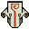

Sven is a rogue knight, half-Meranth by birth. After his father
was executed for violating the Vigil Codex, Sven's mother passed
away, leaving him an orphan. Tightly bound to his own personal
code of honor, Sven is a solitary warrior who wields the legendary
Outcast Blade to devastating effect. He travels alone, searching
for honor and glory, while acquiring substantial gold as a
freelance swordsman
More Details »
Dota 2
Juggernaut

Pusher / Escape / Carry
Yurnero the Juggernaut, named after the martial tradition that he
swore to preserve and protect, is the last of his masked kind who
drowned beneath the waves that deluged the ancient Isle of Masks.
While his inanimate mask bears no readable expressions, each
motion of his blade arm is an expression of a lost art that yearns
to be remembered, and every ritual that he casts alone is but a
shadow of the Isle's once lively and rich traditions.
More Details »